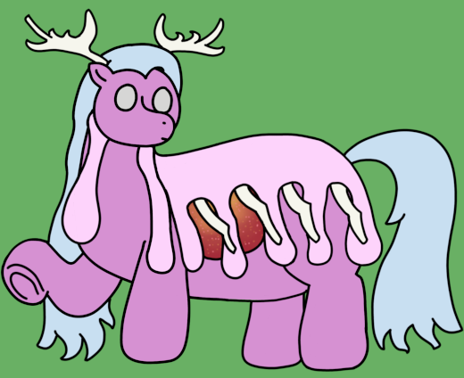

| Components | 248 (Capped by a Solar Archon) |
| Durability | 11/10 |
| Strength | Physical: 11/10 Psionic: 5/10 Magical: 29/10 |
| Specials | Incredible energy manipulation Creation of solid energy caches |
| Personality | Self-restraining and hyperactive |
Permians are a variation on Perditioners, created when a Solar Archon spawns the capstone of the Perditioner's body rather than an Archmother. They trade much of their abilities in direct casting and terramancy for a vastly improved knowledge in the creation of abundant caches of energy. The term for a group of Permians, ranging from a binary for two up until a plurinary for more than five.
Perditioners - Permians
Permians, surprisingly, lose a fair amount of their height and mass as they ignite and their bodies adjust, shrinking down to "just" 52' (1585cm) tall. They maintain many of the features of their unaltered siblings; particularly the cape of blister mass that covers their backs. However, the Perditioner's other distinctive traits, that being their horns and the trunk-esque structure on their backs, are replaced by a large set of antlers and a number of elongated antler-esque protrusions that run over their backs. When using their magic, the Permians' equivalent of a globe appears over their head, between their antlers.
Permians, like other titans, rarely see a role in direct combat. Their power is rarely well-served against a direct threat, and as such, they mostly focus on altering the worlds they inhabit for smaller puppets, though they are far from defenseless if something manages to draw enough of their ire. They largely work with direct energy manipulation and storage, though unlike something like Thresholds, Permians prefer to create external caches that they can then manipulate.
Permians, being solar puppets, seem to exist in some level of higher energy state than most puppet types. While they are capable of recognizing their power and enforcing self-restraint, they also have a certain playfulness about them, to the point where they are occasionally described as getting "zoomies" similar to other terrestrial mammals. They will usually try to find places that are out of harm's way before indulging in this periods of active play, but if no such safe space presents itself, they may simply frolic more carefully amidst their fellows.
Permians share quite a bit of epigenetic scaffolding with their direct siblings, however some of their tissues bear a striking resemblance to that of a Threshold's interstitiary layer responsible for stepping down received arcane currents. Despite this, Permians display no ability to absorb magic directly, suggesting that such tissues perform an internal or even homeostatic purpose.
While outside observation might suggest that a Permian's antlers share material similarities to the antlers of Anchorages, the materials have very little correlation; Permians rarely conduct any significant current through their antlers, which instead seem to exist to help them maintain their structure despite their sustained high energy states.
Permians lack much of the direct spellcasting abilities that their siblings do, instead preferring to manipulate energy in more raw and fundamental ways. However, they do have some surprises, detailed alongside their more typical abilities below:
I can't say I've ever had any one of my children pose any significant danger to myself, but Permians can be a bit too rowdy for their own good sometimes. Talk to them just the right way, and they might just turn into big excitable puppies that the other titans then have to entertain until they calm down. It's most certainly endearing, but it can also be problematic when they're the third largest sorts of children I have!
Permians are a bit silly, to be absolutely frank. I mean, they're basically minmaxxed Perditioners, going all in on energy manipulation and creation. Their stats reflect this; upped magical strength, reduced everything else, including durability. They need some more safe spaces to work in, but they can create a lot of energy and mass from nothing by sheer magical grunt.
Of course, elephant in the room: Like their siblings, they're named after horrible thingsTM. This time it's the Permian extinction, though their names don't exactly line up with their inspiration this time around. I just needed another punishment-themed P-name.
